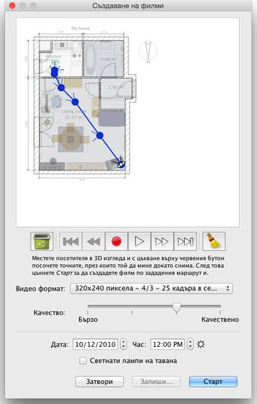

| Създаване на видео | |||
|
За да създадете 3D видео клип във Вашия дом, изберете от менюто 3D изглед > Направи филм... или цъкнете върху инструмента, който Създава 3D филм от лентата с инструменти.
Ще се появи прозорец, подобен на прозореца за Създаване на снимки.  В горната част на този екран се появява плана
на Вашия дом, на който ще начертаете виртуалния път на видео камерата.
Под плана има бутони, с чиято помощ ще поставяте или махате точките от
маршрута, по който да мине камерата докато снима.
За да създадете маршрута, поставете виртуалния
посетител в началната позиция
в плана и цъкнете върху бутона с червената точка в прозореца за
създаване на видео. Преместете посетителя в следващата точка и цъкнете
отново върху бутона с червената точка. Повтаряйте тези стъпки, за да
поставите всички точки, през които камерата да мине докато снима. |
|